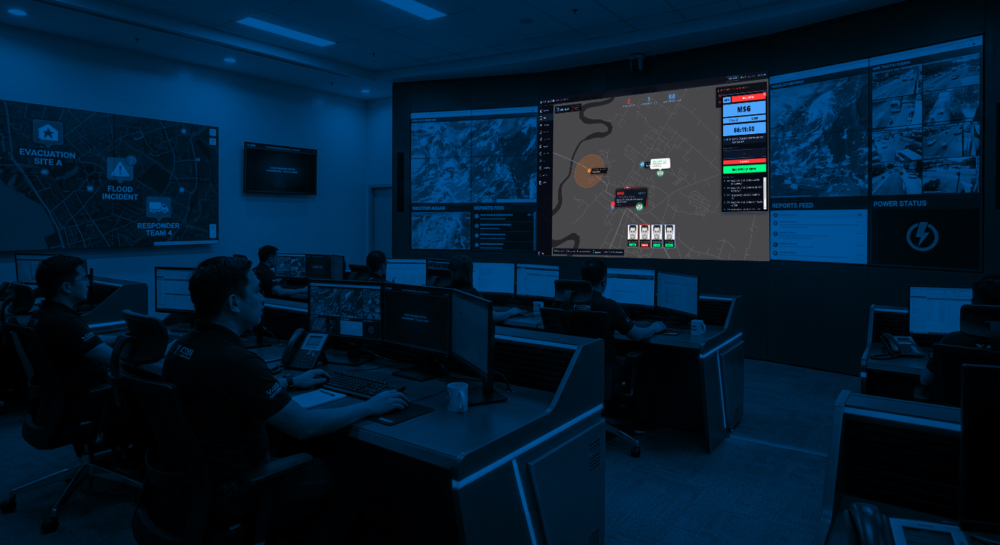
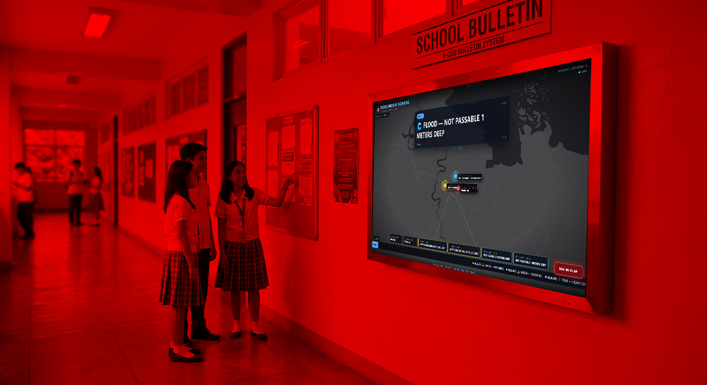

The mesh that still talks when the network dies.
VCon keeps barangays, LGUs, and DRRM teams connected during typhoons, floods, and earthquakes. A self-healing radio mesh that floods evacuation orders, medical alerts, and supply requests — no cellular signal required.
Cellular fails first. Your evacuation order shouldn't.
In the Philippines, super-typhoons, floods, and earthquakes knock out cell towers and power within the first hour. Upland and coastal barangays are left with no way to call for help or coordinate — the very places that need it most.
Towers go down first
Power and backhaul fail in the opening hour of a disaster, silencing every phone in range.
Orders buried on phones
A dead phone notification is not an evacuation order. Critical alerts never reach the people who need them.
No coverage in the last mile
Remote sitios and coastlines have little or no signal even on a good day — there is no fallback when disaster hits.
A self-healing LoRa mesh, not a network.
Every VCon node is a screen-based radio (ESP32-C3 + LoRa) that floods messages across up to five hops. Command nodes send broadcasts; relay nodes on rooftops extend range; outpost nodes receive and reply.
Real 5-hop flooding
Every frame is relayed with (src, seq) de-duplication and jittered re-transmission. Broadcast to everyone or unicast to a single node.
6-bit emergency codec
Up to 304 symbols per packet — 608 with letter-pair shorthand. Phrase tokens compress common alerts like "evacuate immediately" ~10×.
Screen + Nokia keypad
OLED display and rotary encoder. Fire a preset — SOS, EVAC, MEDICAL, INFO — or type any message with a Nokia-style keypad.
72-hour battery
Continuous receive by default so nothing is missed; opt-in duty cycling and an AP-off field mode stretch a single charge for days.
Inbox + weather
Persistent inbox, a two-stage message viewer, city-code filtering, and live weather — all readable on the node screen.
Encrypted by default
Per-municipality PSK (AES-256-CTR) with 8-byte message authentication. Nodes without the key can't decrypt or inject.
Three pieces. One resilient network.
A rugged field node, a war-room dashboard for the DRRM office, and a public kiosk for schools and city hall — all speaking the same mesh.
VCon Node
Screen-based node: OLED display + rotary encoder + buzzer. No phone, no app, no training required to read or send.
- Presets: SOS / EVAC / MEDICAL / INFO
- Nokia-keypad free-text compose
- Persistent inbox + two-stage viewer
- City-code filter + live weather
- Battery saving + AP-off field mode
Command Center
A web dashboard that runs on any laptop connected to a node over USB. Turns the mesh into a live command console.
- Live tactical map with node pinning
- Broadcast to ALL or a specific node
- YELLOW / ORANGE / RED alert phases
- Incident & responder management
- Scheduled + RSS-feed broadcasts, serial terminal
School Bulletin
A read-only big-screen kiosk for schools and city hall. Mesh messages cycle as big, branded announcement cards.
- Rotating cards, URGENT red on keywords
- Dot-matrix marquee mode
- News ticker + pinned notices
- Live Leaflet map with pulsing markers
- 5 themes + sender filter
See it in action.
The Command Center war-room dashboard and the School Bulletin kiosk, running live on the mesh. Click any screen to enlarge.


Field-tested. Built for the next super-typhoon.
We start with a 15-node pilot across Surigao del Norte and Eastern Samar, then scale to full municipal rollouts.
Surigao del Norte + Eastern Samar
15 nodes: 1 command, 4 relay, 10 outpost. Partnership with the DRRM office and the DICT regional office.
Municipal rollout
NDRRMC Red/Orange/Yellow warning integration, plus a 2-hour training session for barangay tanod and BDRRMC volunteers.
Milestone roadmap
Deploy VCon in your barangay.
Every barangay deserves a resilience kit. Adopt a barangay and we'll deploy 10 VCon nodes that keep working when everything else stops.
Then scale to a full municipal roll-out (50-100 nodes), funded from the LGU DRRM budget (RA 10121).
Adopt a barangay
Tell us where you're deploying, and we'll be in touch.